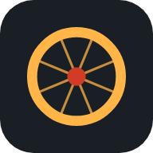

HodômetroPedal
0,00km
Instale no celular
Segure o botão vermelho por 1,5 segundo. Assim o pedal não acaba sem querer no bolso.
Nenhum pedal ainda.
Samsung, Xiaomi e Motorola fecham apps em segundo plano para poupar bateria. Deixe o Hodômetro sem restrição para gravar com a tela bloqueada.
Os pedais ficam guardados só neste celular. Faça um backup de vez em quando.
Grava um pedal simulado de uns 6 km em menos de um minuto, para ver o app funcionando sem sair de casa. Ele fica marcado como demonstração e não entra nas estatísticas.
GPS: no app Android a posição vem direto do chip de GPS do celular (satélites), sem Wi-Fi, sem rede e sem internet.
Distância: descarta leituras com precisão pior que 15 m e saltos acima de 85 km/h, filtra o tremido e não soma nada abaixo de 2 km/h. Quando o celular informa a velocidade do sensor, a distância sai dela, que é mais precisa.
Pausa automática: abaixo de 3 km/h por 5 segundos o tempo em movimento para. Volta assim que você passa de 5 km/h. A média usa só o tempo em movimento.
Tela bloqueada: no navegador o GPS para com a tela apagada e o trecho entra em linha reta. No app Android isso não acontece.
Altimetria: vem da altitude do GPS, que varia bastante. É estimativa.

HodômetroToque no gráfico para ver a velocidade em cada trecho.